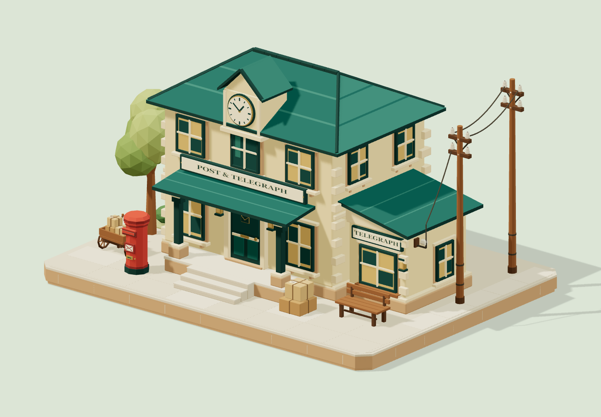
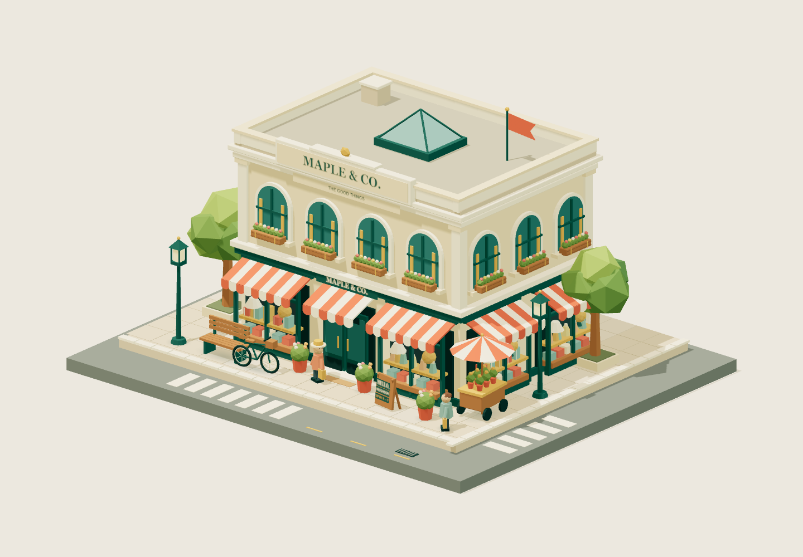
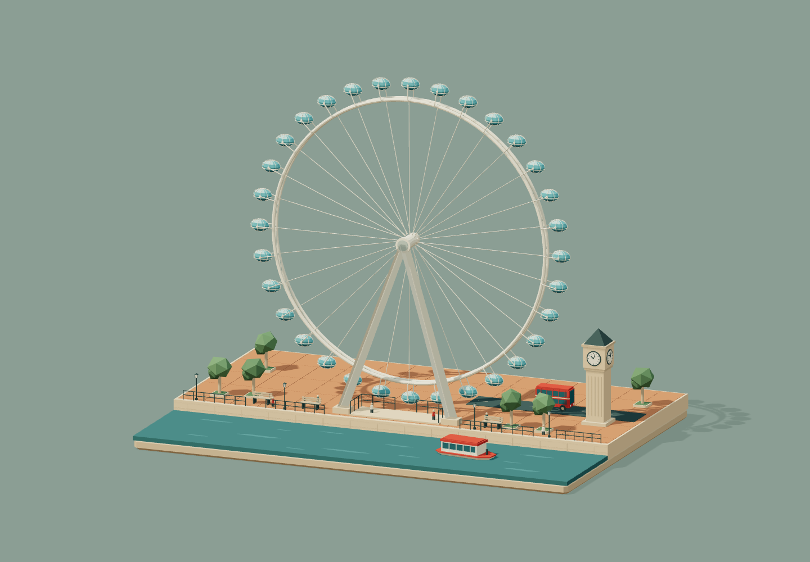

Small worlds.
Built with a process.
从空间蓝图到独立评审，用六阶段技能制作可交互的三维作品。这里收录三个可运行的微缩场景，体验不同主题、机位与互动。

01 / STANDALONE + SOURCE
Juniper 邮电局
投递一封信，点亮电报灯。独立 HTML，保留完整模块源码。
探索小镇邮局 ↗
02 / STANDALONE HTML
Maple & Co.
切换日夜，走近橱窗，探索街角百货里的日常小物。
走进街角百货 ↗
03 / STANDALONE HTML
The London Eye
让摩天轮缓缓转动，在河岸与高处之间切换视角。
看看河畔风景 ↗鼠标拖动旋转，滚轮缩放；手机可触摸操作。以上为实际三维场景。三个独立 HTML 均内嵌所需脚本，无需 CDN，可下载后直接打开。现有三个展示 Demo 尚无模型导出按钮；新版技能默认要求新作品提供 OBJ / GLB 导出。